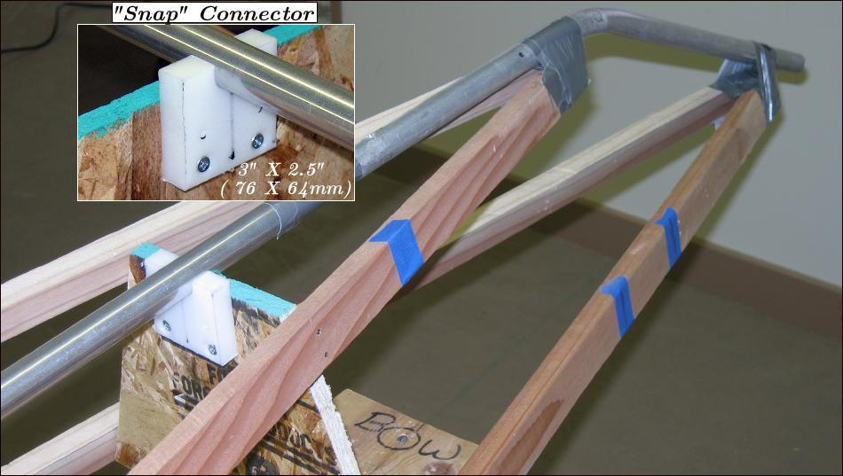

| Sonnet (Skinning Frame) | Menu Previous Page Next Page |
|

The HDPE snap connectors are screwed to the stations and allow the removal of the aluminum keel from the skinning frame. They can be attached before or after the stems are bent. On the Sonnet 18, they were added to stations 1 and 2, and also stations 5 and 6 while fitting the stems. On the Sonnet 16, all 6 added after the stems were bent.
|
|